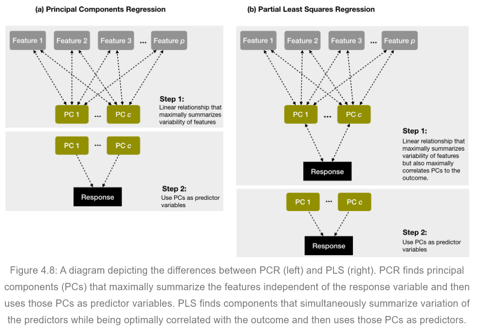

Week06: Appendix03 - Principal Components Overview
1 Appendix03: Principal Components Overview
1.1 Preamble: Regularization
For a dataset with \(N\) observations and \(P\) features. \(P\) is a column perspective and \(N\) is the row perspective of the individual observations.
1.1.1 Column Perspective
[a] Feature selection: Reduce the dimensionality for a model calibration by setting irrelevant parameters to zero, i.e., they don’t influence the model anymore. Example: Irrelevant features are suppressed by setting their parameters to zero (or close to zero as in Ridge/Lasso regression).
The reduction (or down-weighting) of features will reduce the variance at the possible expense of raising the bias.
[b] Principal components: Account for redundancy among relevant features. Example: Two perfectly correlated features in essence contain the same information, thus one feature is sufficient to capture exhaustively the signal of both features on the target variable. For less than perfectly correlated features we combine the shared information in both features into one underlying latent feature (see definition of latent variables). The remainder unique information in both features is uncorrelated with the newly generated latent feature.
1.2 Overview: Principal Components
Principal component analysis in an unsupervised method because it solely uses information in the features by ignoring the target variable.
All features are \(z\)-transformed.
The \(m^{th}\) principal component \(Z_m\) is defined as a linear combination of the \(P\) features: \(Z_m = \sum_{j=1}^{P} \phi_{jm} \cdot X_j\). The determination of the loadings \(\phi_{jm}\) is achieved with the method of principal components, which is based on a eigenvalue-eigenvector decomposition.
High component loadings with \(|\phi_{km}|\) close to one group highly correlated features, either positive or negative, together into the \(m^{th}\) component. Whereas a loading close to zero excludes feature from the \(m^{th}\) principal component \(Z_m\).
The key to principal components selection is that each component summarizes maximum information and independent information within its constituting variables.
The first component captures most of the variability in the features, second component comprises the largest variation of the remaining variation being uncorrelated with the previous component and so forth.
The components are uncorrelated with each other, because \(\sum_{k=1}^{P} \phi_{km} \cdot \phi_{kl} = 0\) and \(\sum_{k=1}^{P} \phi_{km}^2 = 1\).
Special case: Theoretically, there are as many components as there are features, however, many components are irrelevant. For \(M = P\) the estimated coefficients regression coefficients \(\beta_k\) of an constituting variable \(k\) are a function of the principal component weights \(\phi_{km}\) and the component regression coefficient \(\theta_m\):
\[\beta_k = \sum_{m=1}^{M} \theta_m \cdot \phi_{km}\]
Thus, for \(M = P\) no information is lost.
1.3 Partial Least Squares Regression
PLS is a supervised method because it is calculated with target variable \(\mathbf{y}\) in mind.
Usually, the independent features \(\mathbf{X}\) are \(z\)-transformed.
Algorithm:
Calculate the coefficients \(\phi_{k1}\) as the bivariate regression coefficients between the feature \(X_k\) and the target variable \(Y\). The bivariate regression coefficient is proportional to the correlation coefficient.
The first PLS component becomes \(Z_1 = \sum_{j=1}^{P} \phi_{j1} \cdot X_j\).
Calculate the residuals \(e_{j1}\) for each feature by regressing the \(X_j\) on \(Z_1\), i.e., the remainder of \(X_j\) not being correlated with \(Z_1\). Thus, they hold no information of \(Z_1\) and any of its underlying variables \(X_j\).
Use the coefficients \(\phi_{j2}\) of a bivariate regression of the residuals \(e_{j1}\) on the target variable \(Y\).
Calculate the second PLS component by \(Z_2 = \sum_{j=1}^{P} \phi_{j2} \cdot e_{j1}\).
Repeat steps 3, 4, and 5 by calculating at the \(p\)-th step the residuals \(e_{j,p-1}\) by regressing the \(e_{j,p-2}\) on \(Z_{p-1}\). Then obtain \(\phi_{jp}\) by regressing \(Y\) on \(e_{jp}\) and calculate \(Z_p = \sum_{j=1}^{P} \phi_{pj} \cdot e_{j,p-1}\).
Since the PLS components \(Z_p\) are based on residual calculations, the PLS components are uncorrelated with the PLS components already in the model
1.4 Difference between PCA and Partial Least Squares

Figure 4.8: A diagram depicting the differences between PCR (left) and PLS (right). PCR finds principal components (PCs) that maximally summarize the features independent of the response variable and then uses those PCs as predictor variables. PLS finds components that simultaneously summarize variation of the predictors while being optimally correlated with the outcome and then uses those PCs as predictors.